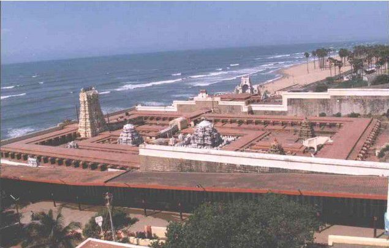

Thiruchandur Murugan Temple
The famous Thiruchendur Murugan Temple,dedicated to ‘Lord Murugan’ is located in Thoothukudi (Tuticorin) District of Tamilnadu and also one of the Arupadai Veedu Temples. The word Thiruchendur denotes sacred and prosperous town of Victory. Thiruchendur temple is trusted to be a sign of Lord Murugan’s victory over the demon king Surapadman. A legend reveals that,after ‘Surasamharam'(Killing of Surapadman) Lord Murugan wished to worship His Father Lord Shiva here. So,the divine architecht named as Mayan constructed the shrines here. Even now Lord Murugan is seen in the posture of worshiping Lord Shiva in the Sanctum Sanctorum of Thiruchendur Murugan Temple
Raja Gopuram of most of the temples in Tamilnadu has been placed in the Eastern direction.But here only it is placed in the western side and also named as Mela Gopuram. This Gopuram was constructed 300 years ago. The temple and Gopuram will be visible at sea for twelve miles around. Originally, the Temple was built by sandstone, and due to corrosion by the sea near the temple the structure of the temple started to disintegrate. A sannyasin named ‘Mouna Swami’ in 1900 A.D. started the rework. And over 72 years, the three Pragarams were constructed by black granite stone. A view of the Thiruchendur Murugan Temple from the sea
According to the poem of ‘Thirunavukkarasar'(one of the Nayanmars)who lived in the 7th century, this ancient temple might have been built during that period. The Temple towers was consecrated by ‘Desigamoorthy Swamigal’ of Thiruvavaduthurai Aadeenam about 300 years ago. The Raja Gopuram of the temple has nine storeys high at 137 feet.To indicate this,there are nine Kalasams(copper finial stoopies) at the top of the Gopuram.
Share This Website